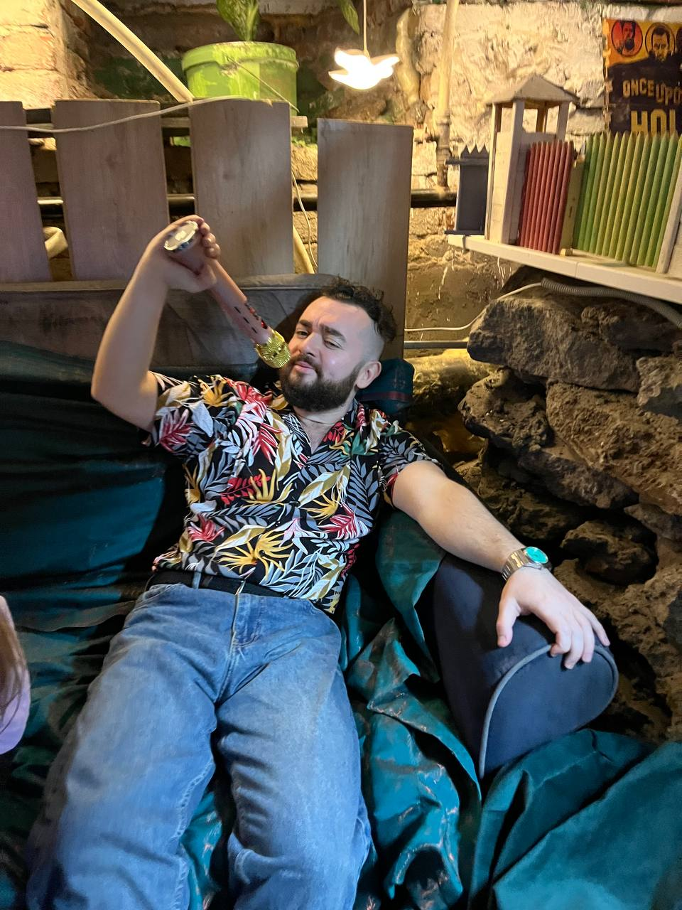
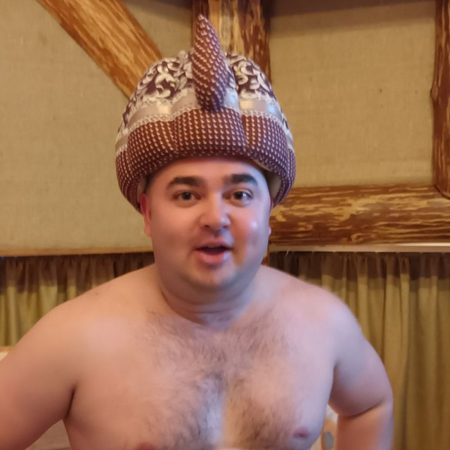
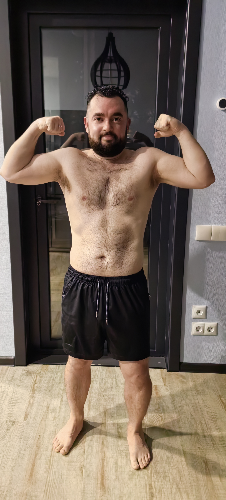

Сбросить вес, не воюя с собой каждый день
Питание, которое встраивается в обычную жизнь — без голода, без марафонов и обещаний «минус 10 кг за неделю».
Записаться на бесплатную консультациюМоя история

Я весил на 40 кг больше, чем сейчас. Сидячая работа, стресс, перекусы на бегу — знакомая история. Перепробовал диеты, срывался, возвращал вес обратно.
В итоге дошёл до результата не через жёсткие ограничения, а через спокойную систему питания, которая не требует силы воли каждый день. Теперь помогаю пройти этот путь другим мужчинам — без хайпа и давления.
Было / стало


Минус 40 кг — без диет на грани, спокойно и без отката назад.
С чего всё началось
Началось всё ещё во времена ковида: я заливал тревогу алкоголем и откладывал важные решения. По факту жил не свою жизнь — занимался имитацией.
В феврале 2024 я бросил пить. Это всё изменило.
Когда начал пересобирать жизнь заново, заметил странную вещь: после некоторой еды я превращался в овоща и ничего не успевал — будто сидел на ней, как на наркотике. Ел не чтобы насытиться, а чтобы «словить кайф».
Я начал убирать такие продукты один за другим и просто отслеживать своё состояние. Худеть я тогда вообще не планировал — хотел вернуть себе эффективность. Но похудение пришло само, побочным эффектом — минус 37 кг за полгода.
Позже прошёл обучение у врача по кето и интервальному голоданию — и собрал в систему то, к чему шёл всё это время на ощупь.
Как проходит консультация
-
1
Знакомство
Коротко обсуждаем твою ситуацию: образ жизни, привычки, что уже пробовал.
-
2
Разбор
Смотрим, что реально мешает результату, и что можно изменить без ломки привычной жизни.
-
3
План
Договариваемся, что делать дальше — если решишь продолжать со мной.
Готов начать спокойно, без диетного хайпа?
Написать в TelegramСейчас беру первых клиентов — мест немного.